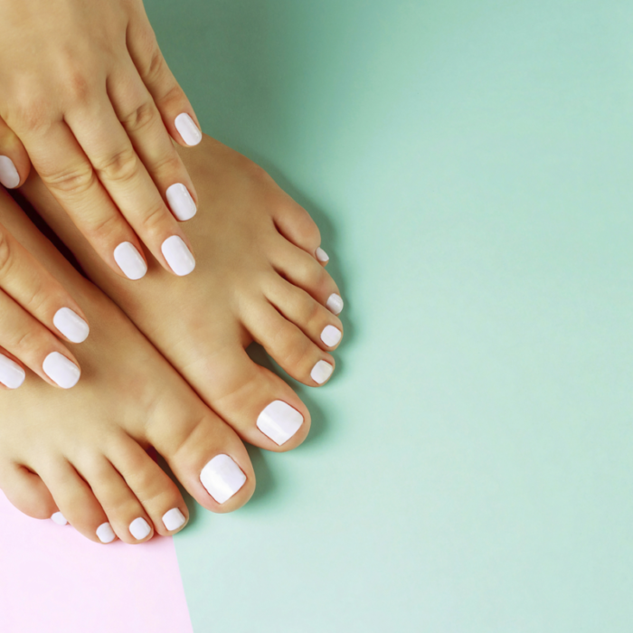

Njega stopala

Klasična pedikura
Uredna i njegovana stopala kroz cijelu godinu
Klasična pedikura obuhvaća njegu stopala, oblikovanje noktiju i uklanjanje zadebljale kože. Tretman je idealan za redovito održavanje, osjećaj lakoće i uredan izgled stopala.
Njega je prilagođena stanju kože i noktiju, kako bi stopala nakon tretmana bila svježa, mekša i urednija.
Prednosti klasične pedikure:
- Uredna stopala i nokti
- Uklanjanje zadebljale kože
- Osjećaj svježine i lakoće
- Idealno za redovito održavanje
Trajanje tretmana: 45 – 60 minuta
Preporuka: Redovito održavanje svakih 4 – 6 tjedana.
Kraljevska pedikura
Detaljnija njega za mekša i njegovanija stopala
Kraljevska pedikura uključuje dodatne korake poput pilinga, parafina i intenzivnije njege kože. Namijenjena je svima koji žele potpuniji tretman i poseban osjećaj njege.
Po želji se može kombinirati s trajnim lakom kako bi rezultati izgledali još urednije i postojanije.
Prednosti kraljevske pedikure:
- Dodatna njega i mekoća stopala
- Piling i parafin
- Uredan i elegantan izgled
- Mogućnost trajnog laka
Trajanje tretmana: 60 – 75 minuta
Preporuka: Idealna za suha i umorna stopala ili kao sezonska njega.
Kako izgleda tretman?
Priprema stopala
Pregled i priprema stopala za tretman.
Njega kože
Uklanjanje zadebljale kože i omekšavanje stopala.
Uređenje noktiju
Skraćivanje, oblikovanje i završna njega noktiju.
Završetak
Krema, parafin ili trajni lak za uredan završni efekt.